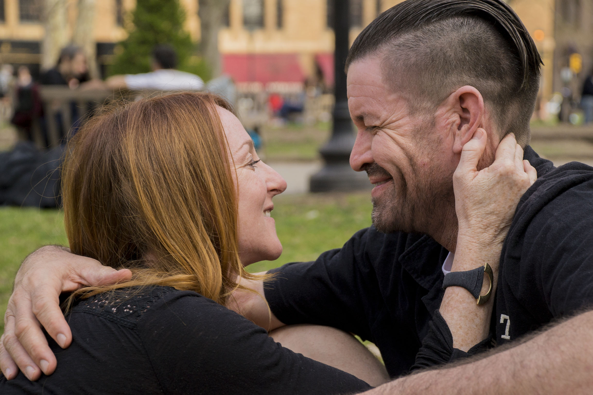

A little about myself
Developer
Experienced in a variety of areas, with a focus in mobile and interactive technology
Psuedo-New Yorker
Raised in Delaware, educated in Philly, currently dwelling in New York
Multi-hobbyist
Hip-hop dancer, musician, and amateur photographer
Volunteer
Faithful servant for the poor & marginalized in the city in response to Christ's love for us
Digging through the Digital
Past Experience & Featured Projects
Project: Xfinity xFi
Role: Android and iOS Developer
Planned and developed the XFINITY xFi demo for Android, publicly showcased at CES 2017. Later developed the initial framework and features of the iOS and Android applications publicly launched in April 2017 and available for 10 million customers.
Watch an xFi VideoProject: TVEverywhere
Role: Android Developer
Maintained 8 NBC TVEverywhere Android apps (including Bravo, Syfy, USA, Telemundo, and more). Planned and developed Android features for the redesign of NBCUniversal's children's network Sprout to Universal Kids.
Watch a TVE VideoProject: Alexa Video Skills for Bravo on FireTV
Role: Software Development Engineer
Partnered with Amazon to create the Bravo Alexa video skill, a high-profile delivery, allowing NBC to become one of the first Amazon partners to implement VSK device-pairing for FireTV.
Read an ArticleDabbling in Photography
-

-

-

-

-

Want to see more?
Still consider myself a novice, but hopefully developing this craft.
Emotions - Can You Read Me Now?
Psychology claims that there exist core emotions that are universally recognized. This work explores four of them:
joy,surprise, sadness, and anger
The images investigate the universality of emotions as they transcend cultural and demographic bounds. Four pieces of the work are grids representing these four emotions performed by a group of people. Unlike the others, the fifth piece questions the homogeneity and manifestation of emotion itself. When asked to portray the emotion that they genuinely felt that day, subjects presented emotions that may or may not have been so superficially visible. They may even display a visage that cannot be understood.